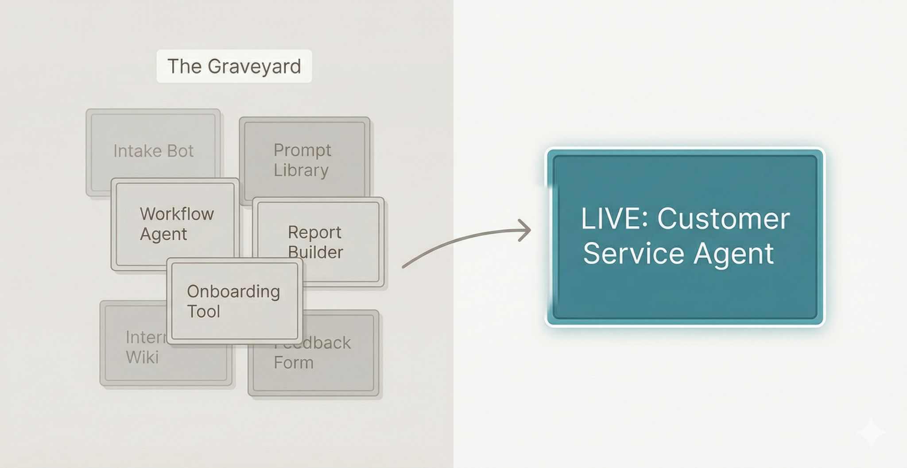

I have a graveyard of AI projects.
At least a dozen tools built with genuine enthusiasm that are now sitting unused. Custom agents, automated workflows, prompt libraries. Some lasted a week. A few were genuinely good ideas that never got embedded into anyone's daily practice, including mine.

Most organizations I work with have a version of this. The gap between trying something and building it into how you actually work turns out to be enormous.
But the graveyard wasn't waste.
Every failed project taught me something about where AI breaks down: bad data, brittle integrations, solutions handed to people who had no reason to change how they worked. You can read about this, but you don't really understand it until you've built something that died for one of those reasons.
Last week I built an AI agent connecting five live production systems (support ticketing, a community forum, payments, user profiles, and email marketing). It triages support requests, surfaces known issues, and drafts context-aware replies automatically. It worked because I knew from previous failures to test each integration against live data before layering any AI on top. That's not a clever insight. It's something I learned the hard way, several times over.
Most organizations I work with aren't lacking tools, they're lacking repetitions: the kind you only get from building something, watching it fail, and doing it again anyway.
The graveyard isn't the problem. Giving up before you learn from it is.
What's the project you abandoned that taught you the most about where AI actually fits?